1004E10 engine, removed - remove cylinder head and oil sump for inspection - includes positioning on stand and removal
- Path
- Procedures > 10 ENGINE > 1004 ENGINE AND POWER UNIT > 1004E ENGINE ASSEMBLY INSPECTION AND REPAIRS > 1004E10 engine, removed - remove cylinder head and oil sump for inspection - includes positioning on stand and removal
- Kind
- repair procedure (removal / refitting; the operation number is the code)
- Applies to
- engines: 1.2 8v, 1.4 8v, 1.3 JTD 16V, 1.9 JTD 8V, 1.9 DIESEL; all production periods
- Interactive page
- https://sloeber94.github.io/elrnDB-fDbl/en/#/2585281
Applies to: engines: 1.2 8v; all production periods
Op. 1004D40 ENGINE - POSITION ON STAND AND REMOVE
1. Disconnect the electrical connections (1a), (1b), (1c), (1d), (1e), (1f), (1g), (1h), (1i) and (1l).
2. Undo bolts (2a) and remove the timing sensor (2b) from the housing.
Open the wiring duct and remove the engine wiring.
Description | Connector | |
|---|---|---|
1a | Throttle position sensor |
Description | Connector | |
|---|---|---|
1b | Idle actuator |
Description | Connector | |
|---|---|---|
1c | Fuel vapour recovery solenoid valve |
Description | Connector | |
|---|---|---|
1d | Information not yet available |
Description | Connector | |
|---|---|---|
1e | Injector |
Description | Connector | |
|---|---|---|
1f | Earth on engine |
Description | Connector | |
|---|---|---|
1g | Detonation sensor |
Description | Connector | |
|---|---|---|
1h | Insufficient engine oil pressure sensor (switch) |
Description | Connector | |
|---|---|---|
1i | Integrated air temperature sensor |
Description | Connector | |
|---|---|---|
1l | Rpm sensor |
Description | Connector | |
|---|---|---|
2b | Timing sensor |
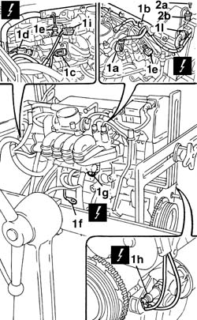
Applies to: engines: 1.2 8v; all production periods
1. Remove the intake manifold complete with injectors and throttle body.
2. Remove the bracket (2a) acting on the nuts (2b).
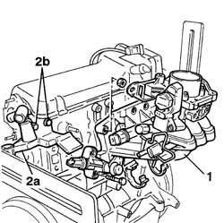
Applies to: engines: 1.2 8v; all production periods
1. Undo the bolt (1a) and remove the engine oil dipstick.
2. Remove the timing drive belt upper guard (2a) and lower guard (2b).
3. Release the electric cable for the rpm and T.D.C. sensor from the fastenings on the timing belt protective covers and remove the rpm sensor.
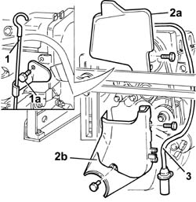
Applies to: engines: 1.2 8v; all production periods
1. Undo the bolts (1a) and remove the auxiliary drive pulley on the crankshaft.
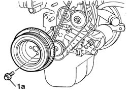
Applies to: engines: 1.2 8v; all production periods
1. Loosen the moving timing belt tensioner nut.
2. Remove the timing belt.
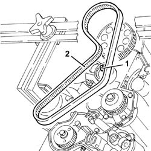
Applies to: engines: 1.2 8v; all production periods
1. Undo the bolts (1a) and remove the tappet cover (1b) complete with gasket.
2. Undo the bolts (2a) and remove the cylinder head (2b).
3. Remove the cylinder head gasket.
4. Remove the two locating dowels.
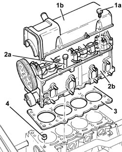
Applies to: engines: 1.2 8v; all production periods
Turn the engine on the overhaul stand.
1. Undo the nuts (1a) and bolts (1b) securing the oil sump to the crankcase.
2. Using the tool (2a) cut the silicon sealant along the entire perimeter of the oil sump.
Description | Code | |
|---|---|---|
2a | Blade | 1.870.718.000 |
3. Remove the engine oil sump.
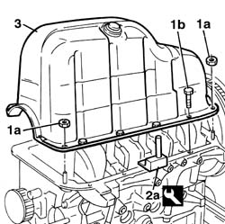
Applies to: engines: 1.3 JTD 16V; all production periods
Place the engine on the overhaul stand.
Op. 1004D40 ENGINE - POSITION ON STAND AND REMOVE.
1. Disconnect the electrical connection from the engine coolant temperature sensor.
Description | Connector | |
|---|---|---|
1 | I.E. engine temperature sensor |
2. Disconnect the electrical connection from the engine rpm sensor.
Description | Connector | |
|---|---|---|
2 | Rpm sensor |
3. Disconnect the electrical connection from the engine oil pressure warning light switch.
Description | Connector | |
|---|---|---|
3 | Insufficient engine oil pressure sensor (switch) |
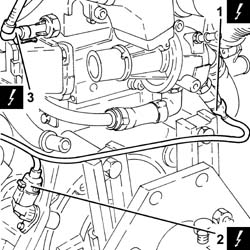
Applies to: engines: 1.3 JTD 16V; all production periods
1. Disconnect the electrical connections from the heater plugs.
Description | Connector | |
|---|---|---|
1 | Heater plugs |
2. Disconnect the electrical connections from the injectors.
Description | Connector | |
|---|---|---|
2 | Injector |
3. Disconnect the electrical connection from the cam angle sensor.
Description | Connector | |
|---|---|---|
3 | Timing sensor |
4. Disconnect the electrical connection from the air conditioning compressor engagement electromagnet.
Description | Connector | |
|---|---|---|
4 | Air conditioning compressor engagement electro-magnet |
5. Undo the bolts fixing the cable duct to the cylinder head.
6. Release the electrical wiring (6a) from the fastenings (6b) and move it aside.
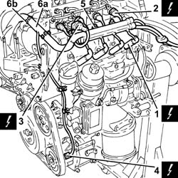
Applies to: engines: 1.3 JTD 16V; all production periods
1. Disconnect the electrical connection from the fuel pressure sensor.
Description | Connector | |
|---|---|---|
1 | Fuel pressure sensor |
2. Disconnect the electrical connection for the pressure relief sensor.
Description | Connector | |
|---|---|---|
2 | Supercharging sensor |
3. Disconnect the electrical connection from the fuel pressure regulator.
Description | Connector | |
|---|---|---|
3 | Fuel pressure regulator |
4. Disconnect the electrical connection for the EGR solenoid valve.
Description | Connector | |
|---|---|---|
4 | EGR solenoid valve |
5. Release the electrical wiring (5a) from the bands (5b) securing the air intake chamber and remove it.
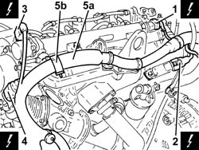
Applies to: engines: 1.3 JTD 16V; all production periods
Remove the protective strips on the oil filter and the engine oil heat exchanger.
1. Undo the bolts securing the engine oil return pipe from the turbocharger, crankcase side.
2. Undo the connectors (2a) and remove the turbocharger engine oil supply pipe (2b).
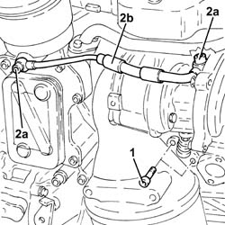
Applies to: engines: 1.3 JTD 16V; all production periods
1. Undo the bolts (1a) and the nut (1b) and remove the exhaust manifold heat shield (1c) complete with engine lifting bracket (1d).
2. Undo the bolt securing the engine oil heat exchanger coolant supply pipe to the engine block.
3. Undo the bolts (3a), loosen the band (3b) and remove the engine oil heat exchanger coolant supply pipe (3c) complete with gasket.
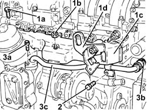
Applies to: engines: 1.3 JTD 16V; all production periods
1. Undo the nuts (1a) and remove the turbocharger (1b) complete with catalytic converter (1c).
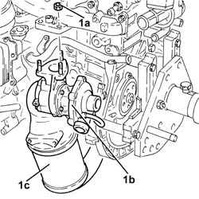
Applies to: engines: 1.3 JTD 16V; all production periods
1. Undo the bolts (1a) and remove the timing side rigid engine support (1b) complete with engine lifting bracket (1c).
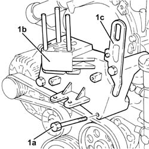
Applies to: engines: 1.3 JTD 16V; all production periods
1. Use a spanner in an anti-clockwise direction on the moving tensioner (1a) and remove the engine components single drive belt (1b).
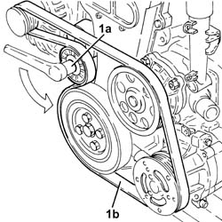
Applies to: engines: 1.3 JTD 16V; all production periods
1. Undo the bolt (1a) and remove the engine components single belt moving tensioner (1b).
2. Completely undo the fixing bolts (2a) loosened previously and remove the crankshaft pulley (2b).
3. Undo the nuts (3a) and remove the coolant pump (3b) complete with gasket.
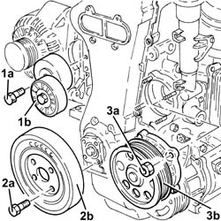
Applies to: engines: 1.3 JTD 16V; all production periods
1. Completely undo the left bolt (1a) loosened previously and remove the pulley mounting flange on the crankshaft (1b).
Op. 1004D40 ENGINE - POSITION ON STAND AND REMOVE.
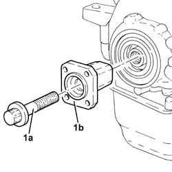
Applies to: engines: 1.3 JTD 16V; all production periods
Undo the bolts and remove the intermediate driveshaft support.
1. Undo retaining bolt (1a) and remove the engine oil dipstick tube (1b).
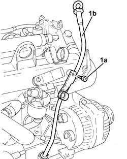
Applies to: engines: 1.3 JTD 16V; all production periods
Rotate the engine through 180° on the overhaul stand.
1. Undo the bolts (1a) and remove the support (1b).
2. Undo the nuts (2a) and the bolts (2b) securing the crankcase sump.
3. Cut the crankcase sump sealant using the tool.
Description | Code | |
|---|---|---|
3 | Blade | 1.870.718.000 |
4. Remove the crankcase sump.
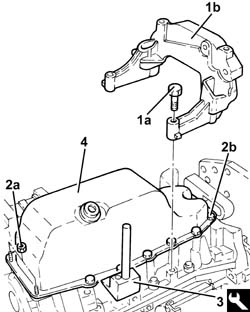
Applies to: engines: 1.3 JTD 16V; all production periods
1. Undo the bolts (1a) and remove the crankcase oil sump partition (1b).
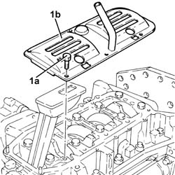
Applies to: engines: 1.3 JTD 16V; all production periods
Rotate the engine through 180° on the overhaul stand.
1. Undo the bolt (1a) and disconnect the connector (1b) for the engine oil vapour recovery pipe from the timing cover.
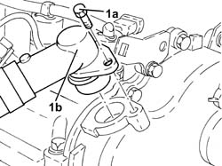
Applies to: engines: 1.3 JTD 16V; all production periods
1. Undo the bolts (1a) and remove the timing cover (1b) complete with engine oil suction device (1c) and engine oil pump.
Remove the timing cover gasket.
2. Keep the brackets.
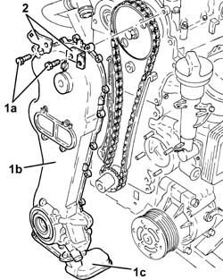
Applies to: engines: 1.3 JTD 16V; all production periods
1. Keep the tool fitted on the exhaust side camshaft
Op. 1004d10 POWER UNIT (MANUAL GEARBOX), REMOVED, REMOVE AND RE-BUILD
Description | Code | |
|---|---|---|
1b | Template | 1.871.000.900 |
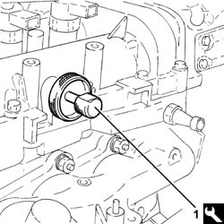
Applies to: engines: 1.3 JTD 16V; all production periods
1. Fit the camshaft timing adjustment tool.
Description | Code | |
|---|---|---|
1b | Template | 1.870.900.300 |
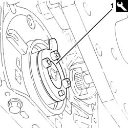
Applies to: engines: 1.3 JTD 16V; all production periods
1. Undo the timing driven pulley fixing bolt.
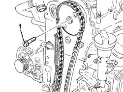
Applies to: engines: 1.3 JTD 16V; all production periods
1. Remove the timing driven pulley (1a) together with the chain (1b) and the timing drive pulley (1c).
2. Undo the bolts (2a) and remove the timing chain fixed plate (2b).
3. Undo the pin (3a) and remove the timing chain fixed plate (3b).
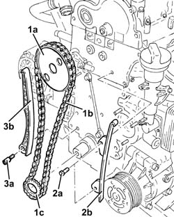
Applies to: engines: 1.3 JTD 16V; all production periods
1. Undo the bolts (1a) and remove the mobile timing belt tensioner (1b).
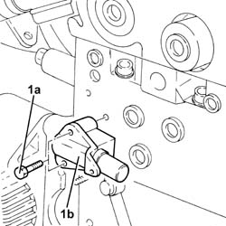
Applies to: engines: 1.3 JTD 16V; all production periods
1. Manually push the clips (1a) and disconnect the fuel outlet pipe from the injectors (1b).
2. Loosen the connectors (2a) and remove the pipe from the pressure pump to the fuel manifold (2b).
3. Unscrew the connectors (3a) and remove the pipes from the fuel manifold to the injectors (3b).
4. Loosen the band and disconnect the return pipe from the pressure pump to the fuel manifold, pressure pump side.
5. Undo the bolts (5a) and remove the mounting bracket (5b) complete with single fuel manifold pipe (5c), fuel pressure regulator (5d) and fuel pressure sensor (5e).
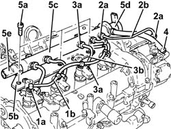
Applies to: engines: 1.3 JTD 16V; all production periods
1. Undo the injector fastening bracket nut.
2. Keep the washer (2a) and the tapered washer (2b).
3. Remove the injectors (3a), one at a time, using the tools (3b) and (3c).
Description | Code | |
|---|---|---|
3b | Extractor | 1.870.900.700 |
Description | Code | |
|---|---|---|
3c | Extractor | 1.870.739.000 |
Remove the injectors complete with bracket.
Repeat the above procedure to remove the remaining pair of injectors.
4. Remove the injector dust seals from the single camshaft housing.
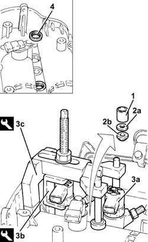
Applies to: engines: 1.3 JTD 16V; all production periods
1. Undo the bolts (1a) and (1b) and remove the camshaft housing assembly (1c).
2. Remove the seal.
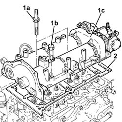
Applies to: engines: 1.3 JTD 16V; all production periods
1. Unscrew the bolt securing the water/exhaust gas heat exchanger for the EGR to the crankcase.
2. Loosen the collar and disconnect the condensed engine oil recovery pipe, oil vapour separator side.
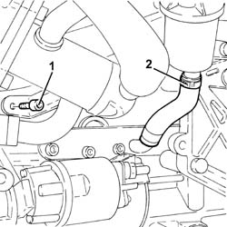
Applies to: engines: 1.3 JTD 16V; all production periods
1. Undo the bolts (1a) and remove the cylinder head assembly (1b).
2. Remove the cylinder head gasket.
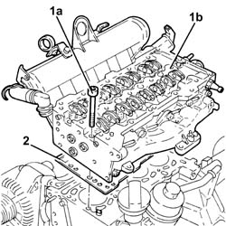
Applies to: engines: 1.9 DIESEL; all production periods
Op. 1004D40 ENGINE - POSITION ON STAND AND REMOVE.
1. Disconnect the electrical connections (1a), (1b), (1c), (1d), (1e) and detach the engine wiring (1f).
2. Disconnect the connections from the heater plugs (2a) and detach the wiring (2b).
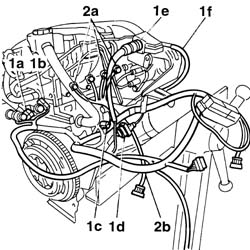
Applies to: engines: 1.9 DIESEL; all production periods
1. Undo the bolt (1a) and remove the engine components single belt pulley (1b).
2. Unscrew the bolts (2a) and remove the auxiliary drive belt pulley (2b).
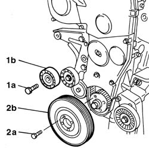
Applies to: engines: 1.9 DIESEL; all production periods
1. Undo the bolts (1a) and remove the timing drive belt guards (1b).
2. Loosen the timing belt tensioner nut.
3. Release the timing belt.
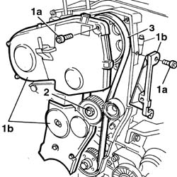
Applies to: engines: 1.9 DIESEL; all production periods
1. Disconnect the oil vapour pipe (1a) after having disconnected the band (1b).
2. Undo the bolts (2a) and remove the tappet cover complete with intake manifold (2b).
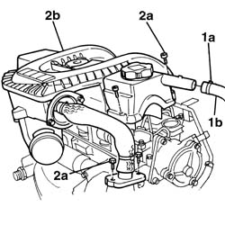
Applies to: engines: 1.9 DIESEL; all production periods
1. Undo the bolts (1a) and loosen the bands (1b), the disconnect the rigid coolant pipe (1c).
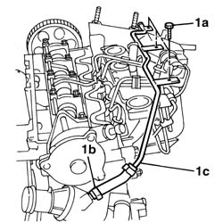
Applies to: engines: 1.9 DIESEL; all production periods
1. Loosen the connectors for the high pressure rigid pipes at the injectors.
2. Undo the connectors (2a) on the injection pump and detach the high pressure fuel pipes (2b).
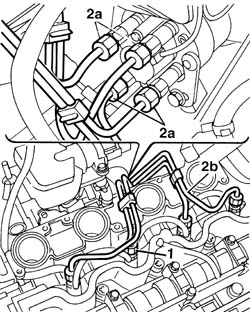
Applies to: engines: 1.9 DIESEL; all production periods
1. Undo the front fixing bolts (1a) and remove the mounting complete with injection pump (1b).
2. Undo the bolts (2a) and detach the intake manifold (2b).
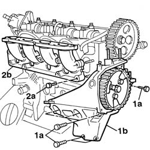
Applies to: engines: 1.9 DIESEL; all production periods
1. Undo the bolts (1a) and the bolts (1b) fixing the EGR flange, then detach the rigid coolant pipe complete with EGR solenoid valve.
2. Undo the bolts (2a) and remove the heat shield (2b).
3. Undo the nuts (3a) and remove the exhaust manifold (3b).
4. Remove the seal.
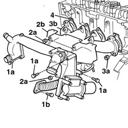
Applies to: engines: 1.9 DIESEL; all production periods
1. Undo the bolts (1a) using the tool (1b) and remove the cylinder head assembly (1c).
Description | Code | |
|---|---|---|
1b | Spanner | 1.852.154.000 |
2. Remove the cylinder head gasket.
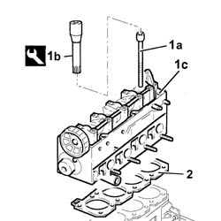
Applies to: engines: 1.9 DIESEL; all production periods
Rotate the engine through 180° on the overhaul stand.
1. Undo the front and rear bolts (1a) fixing the crankcase sump using the tool (1b).
Description | Code | |
|---|---|---|
1b | Spanner | 1.860.833.000 |
2. Undo the crankcase sump side bolts (2a) using the tool (2b), bearing in mind that the rubber plugs in the metal casing must be removed in order to reach the flywheel side bolts.
Description | Code | |
|---|---|---|
2b | Spanner | 1.860.834.000 |
3. Remove the crankcase sump (3a).
Description | Code | |
|---|---|---|
3b | Blade | 1.870.718.000 |
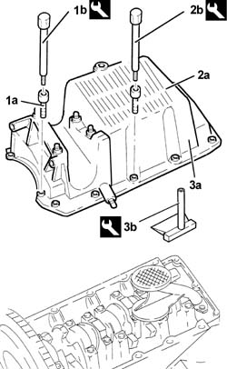
Applies to: engines: 1.9 JTD 8V; all production periods
Op. 1004D40 ENGINE - POSITION ON STAND AND REMOVE.
1. Undo the bolt (1a) and remove the engine components single belt pulley (1b).
2. Undo the bolts (2a) and remove the power unit reaction rod mounting bracket (2b).
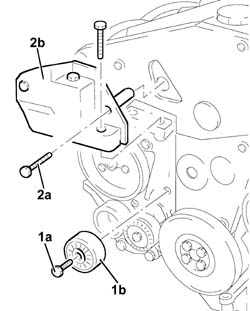
Applies to: engines: 1.9 JTD 8V; all production periods
1. Undo the bolts (1a) and remove the timing drive belt guards (1b).
2. Loosen the timing belt tensioner nut.
3. Release the timing belt.
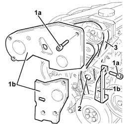
Applies to: engines: 1.9 JTD 8V; all production periods
Undo the bolts and remove the oil dipstick assembly.
1. Remove the band (1a) and disconnect the pipes (1b) from the fuel return manifold.
2. Undo the bolts (2a) and remove the fuel return manifold (2b).
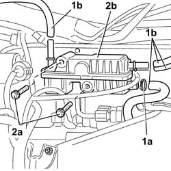
Applies to: engines: 1.9 JTD 8V; all production periods
1. Using the specially made ordinary spanners (1a) and (1b), undo the manifold side connector (1c) and the pressure pump side connector (1d).
2. Remove the pipe from the pressure pump to the fuel manifold.
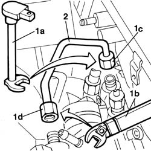
Applies to: engines: 1.9 JTD 8V; all production periods
1. Undo the bolts (1a) fixing the power steering pump supply pipe bracket, undo the pipe connector and remove the bracket complete with pipe (1b).
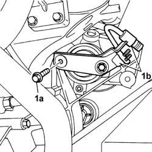
Applies to: engines: 1.9 JTD 8V; all production periods
1. Undo the front side bolts (1a) and remove the mounting complete with pressure pump (1b).
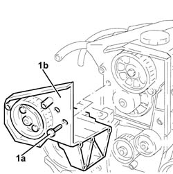
Applies to: engines: 1.9 JTD 8V; all production periods
1. Disconnect the oil vapour recovery pipe from the cylinder block/crankcase and from the head.
2. Disconnect the condensation oil recovery pipe from the crankcase sump.
3. Undo the nuts (3a) and remove the oil vapour separator assembly (3b).
4. Remove the bracket.
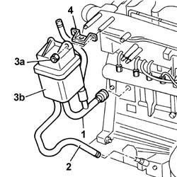
Applies to: engines: 1.9 JTD 8V; all production periods
1. Undo the bolts (1a) for the heat shield (1b), then remove it.
2. Undo the bolts (2a) and disconnect the exhaust gas recirculation pipe (2b).
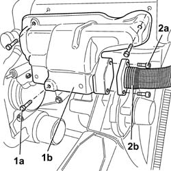
Applies to: engines: 1.9 JTD 8V; all production periods
1. Undo the nut fixing the exhaust manifold bracket to the cylinder block/crankcase.
2. Undo the bolts (2a) and remove the protection (2b) for the sump oil return pipe from the turbocharger.
3. Disconnect the sump oil return pipe from the turbochager.
4. Disconnect the oil inlet pipe from the turbocharger.
5. Undo the bolts (5a) and remove the coolant manifold (5b) and the gasket (5c).
6. Undo the nuts (6a) and remove the exhaust manifold (6b) complete with turbocharger and E.G.R. valve.
7. Remove the seal.
Applies to: engines: 1.9 JTD 8V; all production periods
1. Undo the bolts (1a) and remove the tappet cover (1b) complete with gasket.
2. Undo the bolts (2a) using the tool (2b) and remove the cylinder head assembly (2c).
Description | Code | |
|---|---|---|
2b | Spanner | 1.852.154.000 |
3. Remove the cylinder head gasket.
Applies to: engines: 1.9 JTD 8V; all production periods
Rotate the engine through 180° on the overhaul stand.
1. Undo the front and rear bolts (1a) fixing the crankcase sump using the tool (1b).
Description | Code | |
|---|---|---|
1b | Spanner | 1.860.834.000 |
2. Undo the side bolts (2a) fixing the crankcase sump using the tool (2b).
Description | Code | |
|---|---|---|
2b | Spanner | 1.860.833.000 |
3. Remove the crankcase sump (3a).
Description | Code | |
|---|---|---|
3b | Blade | 1.870.718.000 |
Applies to: engines: 1.4 8v; all production periods
1. Turn the wrench clockwise on the auxiliary drivebelt tensioner.
2. Remove the auxiliary drivebelt.
Applies to: engines: 1.4 8v; all production periods
1. Undo the bolts (1a) and timing side power unit rigid mount (1b).
Applies to: engines: 1.4 8v; all production periods
1. Undo the bolts (1a) and remove the protective timing covers.
Applies to: engines: 1.4 8v; all production periods
1. Undo the bolts (1a) and remove the engine pulley (1b).
Applies to: engines: 1.4 8v; all production periods
1. Adjust the belt tensioner (1a) and remove the timing belt (1b).
Applies to: engines: 1.4 8v; all production periods
- Disconnect the electrical connection for the water temperature sensor.
Description | Connector | |
|---|---|---|
- | Engine coolant temperature sensor/sender unit |
- Disconnect the electrical connection for the timing sensor.
Description | Connector | |
|---|---|---|
- | Timing sensor |
- Disconnect the electrical connection from the ignition coil module.
Description | Connector | |
|---|---|---|
- | Ignition coil |
- Disconnect the electrical connection for the throttle body.
Description | Connector | |
|---|---|---|
- | Integrated throttle casing actuator |
- Disconnect the electrical connection for the knock sensor.
Description | Connector | |
|---|---|---|
- | Detonation sensor |
- Disconnect the air conditioner compressor activation electrical connection.
Description | Connector | |
|---|---|---|
- | Air conditioning compressor engagement solenoid | See L021 AIR CONDITIONING COMPRESSOR ENGAGEMENT SOLENOID VALVE |
- Disconnect the earth lead from the crankcase.
Description | Connector | |
|---|---|---|
- | Earth on engine |
- Disconnect the electrical connection for the absolute pressure sensor.
Description | Connector | |
|---|---|---|
- | Absolute pressure sensor |
- Disconnect the electrical connection for the air pressure/temperature sensor.
Description | Connector | |
|---|---|---|
- | Air pressure/temperature sensor |
- Disconnect the electrical connection for the variable valve timing electromagnet.
Description | Connector | |
|---|---|---|
- | Variable valve timing actuator | See N76 PHASE TRANSFORMER ACTUATOR |
1. Undo bolts (1a) and remove the injection control unit mount (1b).
2. Undo bolts (2a) and remove the timing sensor (2b).
Applies to: engines: 1.4 8v; all production periods
1. Undo the bolts (1a) and remove the ignition coil module (1b).
Applies to: engines: 1.4 8v; all production periods
1. Undo the nuts (1a) and remove the intake chamber (1b).
Applies to: engines: 1.4 8v; all production periods
1. Undo the bolts (1a) and remove the cam cover (1b).
2. Undo the bolts (2a) and remove the cylinder head (2b).
3. Remove the cylinder head gasket from the crankcase.
4. Remove the locating bushes.
Applies to: engines: 1.4 8v; all production periods
- Turn the engine through 180° on the overhaul stand.
1. Undo the nuts (1a) and bolts (1b) securing the sump to the crankcase.
2. Remove the sealant using tool (2a) and remove the engine oil sump (2b).
Description | Code | Function | |
|---|---|---|---|
- | Blade | 1.870.718.000 | Cut the crankcase sump sealant |
Topics linked from this page (26)
- 1004d10 power unit (manual gearbox), removed, remove and re-build
- 1004D40 engine - position on stand and remove
- A030 IGNITION COIL
- A040 HEATER PLUGS
- C040 ENGINE EARTH
- K030 ENGINE OIL PRESSURE SENSOR (SWITCH)
- K036 ENGINE COOLANT TEMPERATURE SENSOR/SENDER UNIT
- K43 INTEGRATED AIR TEMPERATURE SENSOR ( ENGINE )
- K044 AIR PRESSURE - TEMPERATURE SENSOR
- K46 RPM SENSOR ( ENGINE )
- K047 TIMING SENSOR.
- K47 TIMING SENSOR ( ENGINE )
- K048 ABSOLUTE PRESSURE SENSOR
- K050 DETONATION SENSOR - 1
- K50 DETONATION SENSOR ( ENGINE )
- K56 THROTTLE POSITION SENSOR
- K082 TURBOCHARGING SENSOR
- K83 FUEL PRESSURE SENSOR ( ENGINE )
- K45 ENGINE COOLANT TEMPERATURE SENSOR
- L10 FUEL VAPOUR RECOVERY SOLENOID VALVE ( ENGINE )
- L020 AIR CONDITIONING COMPRESSOR ENGAGEMENT SOLENOID
- L30 EGR SOLENOID VALVE ( ENGINE )
- N070 INJECTOR
- N74 IDLE ACTUATOR
- N075 THROTTLE BODY ACTUATOR
- N77 FUEL PRESSURE REGULATOR ( ENGINE )
Topics that link to this page (6)
- 1004E40 engine removed, general overhaul
- 1004E42 compressor
- 1020A24 crank case oil sump - r + r clean seals for sealant application with engine removed
- 1024A10 CRANKSHAFT - R.R WITH ENGINE REMOVED - CHECK AND, IF NECESSARY, REPLACE MAIN JOURNALS AND CRANKPINS
- 1028H14 piston connecting rod set - r r
- 1028H24 piston with connecting rod - r r